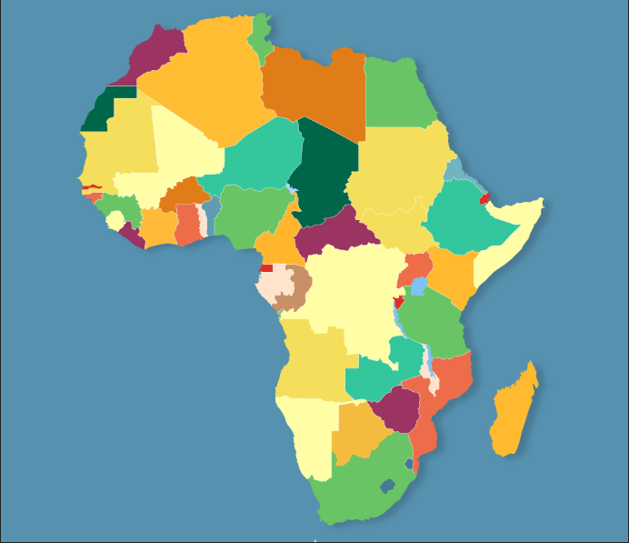

- Portifolio
furebodidace582@gmail.com

Africa is a big continent with 54 countries , and the majority of its population is black. It can become the world's super power due to its wealth.
By Furebo Didace on Tuesday August the 18th 2020
The African continent has many underground resources and other resources that make the property of many african countries including the forests ,water and soil. According to the forests, there are some parks full of animals and birds of different types we can not find in other world's continents. Some countries have volcanoes where there are gorillas and the beautfull lakes . This is the cause of the tourism on african continent and brings a lot of money from outside Africa to African countries.
Africa can become a world's super power for different ways I am going to say in this article. The first way is by the good management of the resources. If the undergound resources extracted from different mines in africa are extracted by africans themselves and then not exported to Asia or Europ or elsewhere to be sold there; this could be the property of Africa. But once these row materials are transformed on the continent , we can make many materials from our reources and then export these materials outside like other countries like China or United State of America . In this way we can receive a lot of maney from outside and then the economie of our continent can grow significantly.
But our economie is not growing when Africa is using europian or chinies copmanies to extract our minerals, because these companies are payed with so much money. Also african citizens need a lot of products from these resources. These products we need african countries import them from outside africa.Africans buy them with less money we received from resources , but there are imported at high price. So to make our economie growth Africans need to extract our resources, build indusrties of row material transformation , use africans as label force and then export the finished products from our resources to outside.
African Good Leadership is the second way the economie of African countries can grow rapidly. In the last hundreds of years, the african continent has been colonialezed by the different countries of Europ Asia and America. The africans have been transported by force to America to work in the sugar can plantations and to work in the mines of minerals as slaves. This has been planed and leaded by the leaders of those outside countries then their countries have been developped by the force of Africans , the first property of Africa. Those colonisers has separeted the force of Africa one part transported to work as slaves in their countries an other part exploited in Africa in the interest of outsiders. What Africa need to be more powerfull is Unity. Africa need to work in unity as one country.But the problem that exist today is neo colonialism where until now where European countries still have their hands on some Africa countries in two different ways: In the first way they cause the divisions in africans by showing the generosity to some group of peoples who have different opinions to the leaders of some governoments. They tell these groups that they are right, and then support them with weapons to fight the legitimate leadership. In the Second way those rich countries throught their neo colonialism , they provide aids to legitimate african leaders , but they show them how this aid should be used! You may ask why? the answer is in the way of their interests.
To encrease the power of Africa, Africa need its own united leadership , if africans are united they will put their forces togather in order to grow their economie. With african unity there are no endless wars like in Lybia where the europian countries are playing a big role in the war. By good management of resources and by african unity , Africa can become the world's supper power.
We need to hear from you. Please leave your comment
View all comments bellow:
Enter your name:
Enter your Email:
Leave a comment: